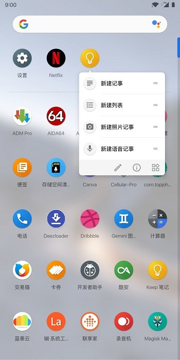

用了五年 Nova Launcher，我为什么在一个周末迁到了 Lawnchair
从 Nova 到 Lawnchair 的完整迁移故事：备份导入、搜索计算器真香、小部件踩电池优化坑，以及那些预想不到的细节差异。
周五晚上的那通电话
「你说 Nova 又重载桌面了？」朋友在电话那头笑，「MIUI 把第三方启动器往死里杀，你还没换啊？」
我握着手机盯着黑屏亮起来又暗下去的桌面——这已经是这周第三次了。Nova Launcher 我用了五年，从三星 S9 一直用到现在的 K60 Pro。它陪我换过三台手机，桌面布局跟着我漂洋过海，文件夹里的应用分类比我的衣柜还整齐。但最近这半年，MIUI 的电池优化把它往死里干：早上出门摆好的小部件，中午拿出来看天气发现显示的是昨天的数据；微信支付的快捷方式偶尔会消失，等我手动重载 Nova 才回来；最过分的一次是坐高铁回家，中途想拍张照片直接开相机，按了 Home 键等了三秒桌面才加载出来——三秒够错过一张好照片了。
「你换个 Lawnchair 试试，开源的，原生 Pixel 那味儿。」朋友说，「而且新版支持直接读 Nova 备份，不用手动重建。」
挂了电话我在床上翻了个身。五年的布局、五年的文件夹结构、五年的手势习惯……说换就换？但那个三秒的空白画面又浮上来。我爬起来，打开浏览器搜了一下它的官网，决定先看看再说。
第一次启动：导入 Nova 备份
安装包从官方下载拿的。安装完按 Home 键，系统弹出了熟悉的「选择启动器」对话框——这次多了 Lawnchair。我选了「始终」，屏幕闪了一下，Lawnchair 的默认桌面出现在眼前：干净、极简，底部 Dock 一排图标，上面是几个推荐的小部件。
但默认的空白桌面不是我想要的。我要的是用了五年的那套布局：主屏第一页放常用 app 和支付快捷方式，第二页文件夹分类，第三页留给小部件。朋友说的「支持 Nova 备份」让我抱着试试看的心态打开了设置。
长按空白 → 主屏幕设置 → 右上角三个点 → 恢复备份。文件选择器里我找到之前在 Nova 里导出的那个 .novabackup 文件——名字叫 backup_20261001.novabackup，是上个月调完布局顺手存的。
Lawnchair 弹出了一个预览对话框，告诉我哪些内容能迁移、哪些不能：
- 主屏幕网格布局和图标位置——能迁移
- 文件夹结构和里面的应用——能迁移（前提是应用还在）
- 小部件的位置——能迁移，但内部数据要重新配
- Nova 专属的那些复杂手势——不能迁移
- 抽屉布局——不能迁移，两个启动器逻辑完全不同
最后一条有点扎心。但想想也是，抽屉这个东西两个启动器从设计理念上就不一样：Nova 是网格为主、搜索为辅；Lawnchair 反过来，搜索才是主角。
我点了「恢复」，等了大概十秒。屏幕闪了一下——我的桌面回来了。
不是一模一样，但八九不离十。每个图标的位置大致对齐了，文件夹结构完整，小部件也都在原来的位置。唯一明显的区别是 Nova 用了子网格定位（图标能精确对齐到更小的间距），Lawnchair 把这些图标对齐到了标准网格，有几个地方间距略宽了一点。但说实话，如果不是我盯了五年，根本看不出来。

搜索栏的计算器：被低估的功能
迁移完的第一个早晨，我在抽屉搜索框里随手敲了一句 (199 + 299) * 2，Lawnchair 在搜索框下方直接弹出了计算结果 996。
我愣了一下。这是什么时候加的功能？
以前用 Nova 的时候抽屉搜索就是纯搜应用，顶多加个联系人匹配。Lawnchair 这个搜索栏把好几个功能揉在了一起：搜索应用是基本操作，往上翻会看到联系人、系统设置项、文件、网页搜索建议，还有计算器——只要输入里有数学表达式，结果实时显示，点击不会跳转到任何地方，就是纯给你看一眼。
那天早上我在算信用卡分期的手续费，本来要切到计算器 app 按半天，结果直接在搜索框里敲了个式子就完事了。后来慢慢发现搜索还能匹配联系人姓名、公司名称和备注——上次找一个忘了号码的老同事，直接敲公司名就出来了，比在通讯录里翻快多了。
但文件搜索有个坑。一开始我搜不到下载目录里的东西，以为是我没开权限。后来才发现这不是我没设置，是 Play Store 版本的限制——Google Play 不让第三方启动器拿「全部文件访问」权限，所以 Play Store 版只能搜照片视频和音频。要搜全盘文件得用 GitHub 版，手动去系统设置里授予「所有文件访问」权限。我把 Play Store 版卸了装了 GitHub Releases 版，重新授权之后文件搜索才正常。
小部件的电池优化坑
如果说搜索计算器是惊喜，那小部件问题就是周末最大的败兴。
恢复备份之后小部件都在原来的位置，但第二天早上起来一看——天气小部件显示的还是昨天的温度，日历上过了的事件还挂在那，连音乐小部件都停在昨晚听的那首歌。
我以为是恢复备份时小部件的内部数据没迁过来——Lawnchair文档里也说了，备份只保存位置和尺寸，不保存内部数据。我长按天气小部件想手动刷新，结果连刷新选项都没有。打开对应的天气 app，手动触发了一次数据更新，回到桌面——还是旧的。
折腾了半小时才反应过来：这跟之前 Nova 重载桌面的原因是同一个——电池优化。
MIUI 的电池管理把 Lawnchair 的后台进程时不时就杀了，连带着挂在它上面的小部件宿主 app 也被一并清理了。之前给 Nova 排除电池优化时我只设了 Nova 本身，这次在 Lawnchair 上我犯了同样的错：只把 Lawnchair 设成了「无限制」，忘了小部件对应的宿主应用也得设。
天气小部件对应天气 app，日历小部件对应系统日历，音乐小部件对应音乐播放器——这些宿主 app 一个一个找出来，统统在电池设置里排除优化。然后重启了一次 Lawnchair，小部件才慢慢刷新过来。
这个教训我记下来了：换启动器之后，电池优化要排两层——启动器本身要排，所有你用的小部件对应的宿主 app 也要排。之前 Nova 上小部件偶尔出问题就是这个原因，只不过当时以为是 Nova 的 bug 就没深究。
抽屉、主题和那些意料之外的调整
Nova 的手势不能迁过来，这意味着常用的双击锁屏、上滑打开抽屉这些得重新配。Lawnchair 的手势设置界面比 Nova 简洁不少——没有 Nova 那种一个手势可以触发十几个动作的复杂度，但该有的都有：双击锁屏、捏合进入桌面设置、上滑打开抽屉、左右滑动切换屏幕。我花了大概五分钟就把手势重新配了一遍，比想象中快。
抽屉设置是全新的，因为 Lawnchair 的抽屉逻辑跟 Nova 完全不同。Nova 是固定网格，Lawnchair 可以调透明度、背景模糊程度、网格大小，还有个叫 Caddy 的功能——把常用的 app 固定在抽屉顶部一排。我把微信、支付宝、相机、浏览器这些高频 app 钉在了 Caddy 上，平时用抽屉直接点顶部那排就行，不用翻到底下找。
主题这块我倒是省了心。Lawnchair 默认就是 Pixel 原生风格，跟我之前用的 Nova 主题包颜色差不多——深蓝强调色、圆形图标、圆角卡片。我只在主题设置里把强调色调成了跟手机壁纸更搭的青绿色，其他保持默认。
周日晚上的复盘
两天时间，从决定换启动器到现在完全适应，比我预想的顺利。Nova 备份导入省了我至少两小时的手动重建，搜索计算器是实打实提高了日常效率，抽屉的 Caddy 功能让高频应用触手可及。踩的坑主要就两个：文件搜索要 GitHub 版、小部件宿主 app 也要排电池优化——都是一次性的事，调好就不用管了。
现在我坐在书桌前敲这篇东西的时候，桌面安安稳稳的，没有闪屏重载，小部件实时更新，抽屉一滑就出来。三年前如果有人跟我说我会换掉用了五年的 Nova Launcher，我肯定觉得他疯了。但 Lawnchair 确实做到了——它没有 Nova 那么多花里胡哨的功能，但该有的都有，不该有的一个都不多，开源、轻量、原生 Pixel 那种干净的气质，用起来不闹心。

至于 Nova 嘛，我暂时没删。毕竟五年的感情在那，万一哪天想回去看看呢。但说实话，这两天用下来，我已经不太想回去了。
这套桌面配置折腾完之后我习惯性地做了个备份——设置里点三个点创建备份，存到了下载目录。换启动器、刷 ROM、换手机，这都是会让人头大的场景，但有个完整的备份在手上，不管是往前冲还是往后退，心里都踏实。完整的开源资料在三个地方都有——GitHub是主仓库，Gitee对国内用户更友好，GitCode也算一份冗余备份——不管你习惯用哪个平台，总能找到对应的那一份。